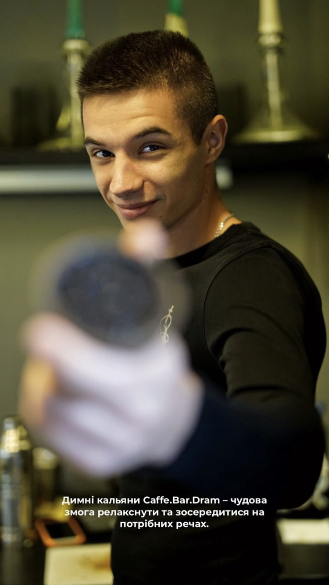

Моя невеличка біографія
Всіх вітаю на моїй першій веб сторінці де я розкажу вам хто я, де народився, де проживаю і чим займаюсь. Сподіваюсь що вам сподобається!
Досвід роботи у різних сферах.
- Хотей - 1 рік, посада: офіціант-бармен;
- Star Life - 1 рік, посада: страховий агент;
- Basilico - 2 місяці, посада: офіціант;
- Lechee - 3 роки, посада: Кальянщик;
- Mr.Smoke - 2 роки, посада: Старшим кальянщиком;
- Art Lounge - 6 місяців, посада: Кальянний майтер;
- Dram Cafe Bar - 2 роки 6 місяців, посада: Менеджер по кальянам, кальянний майстер;
- Bolt - 3 місяці, посада: Водій таксі;
- Gentleman Delivery - 2 роки, посада: Кур'єр;
- Дикий Захід - на даний момент працюю тут з червня 2024 року на посаді Кальянного майстра.
Моя історія народження.
Мене звати Богдан. Повне ПІБ: Ганчіч Богдан Миколайович.
Народився 02.10.1998 року в селі Лоза, Іршавського району в
Закарпатській області. Наразі я один з кращих кальянних майстрів
м.Ужгород.
Народили мене мої чудові батьки, батько Микола та матуся Тетяна. На
той момент вони проживали в домі з бабусею Анною. Але не все так
просто. Бабуся має трохи складний характер, тож мої батьки сорились з
нею неодноразово. Після чергової сори з моєю бабусею, яка випроторила
їх за двері, вони якиїсь час жили в сусідньому селі Гребля, де знайшли
пустуюччий дім.
Тож знайшовши цю оселю, поселились там, і розпочали будувати свою
повноцінну сім'ю. Але яка ж це сім'я без дітей. На той час кожен мав
мати хоч одну дитину, бо без цього люди довкола могли засуджувати,
обговорювати, придумовувати свої історії чому немає дітей і т.д.
Вони і самі хотіли дітей, але не все так просто. це було їх перше
випробування на цьому шляху. Чому випробовування? Тому що їхні спроби
тривали аж 9 довгих років!
Невеличка ремарочка. По словам батьків, мене зачали в домі, де ніколи
не було дітей! Тому це було диво що вони це зробили.
Через такі обставини мене назвали Богданом - Богом даний!
Бабуся, дізнавшись що у батьків буде дитя, знову приютила їх у себе.
Там мене і народили. Потім знову сори, виселення, тож знову переїзд.
Потім через хворобу померли батьки моєї мами, і після цього ми
переїхали до їх домівки, де зараз і проживаємо.Після мене через трохи
більше двох років на світ появився мій менший брат, Юра.
Дитинство.
Ріс я в середньо статистичній сім'ї, де в загальному всього хватило
для того щоб вирости здоровим хлопаком. Звичайно були моменти коли не
вистачало грошей, але я думаю кожна сім'я з цим стикається рано чи
пізно.
Далі все по стандарту: садочок, школа і дорослішання. В школі я не був
відмінником, так як якось з дитинства я не любив коли мене заставляли
шось вчити, що не було для мене інтересним і захоплюючим.Здебільшого
постійно десь пропадав, то на стадіоні, то на річці, то після школи з
друзями знов повертались ввечері до школи і тренувались, грались,
чудили різне. Але і вчився, бо не хотів постійно двійки приносити
додому. Добре давалися мені такі предмети як математика, фізкультура,
українаська мова і трудові навчання. Були інтересні і інші предмети,
але в силу того що я недолюблював тих вчителів, які вели ті предмети,
я їх вчив через силу.
Закінчив навчання, як то в нас кажуть, твердим ударником. Потім
поступив до університету УжНУ на Інженерний факультет, спеціальність
"Приладобудування".Я був радий нарешті вирватись з сільської місцевості і переїхати в
місто. Звичайно навчання в університеті перший час мені подобалось.
Проживав я місті Ужгород, в гуртожитку, без батьківського
нагляду,могли робили все що хотіли і навіть більше, що ще потрібно
було! Але і за навчання не забував. Перших два роки я добре вчився,
але потім набридло, по декільком причинам.
Літом я працював, тому що хотів вже більше якоїсь самостійності в
житті і хоча б трохи зняти нагрузку з моїх батьків. Тож з плином часу
я дедалі більше поринав в роботу і на другий план ставив навчання.
Через це вирішив перевестись на заочне навчання і працювати
повноцінно.
Ким? Де? Коли? Чому?
Першою моєю роботою було офіціант-бармен в пабі "Хотей".
Десь близько року я там пропрацював. Потім хотів спробувати свої сили
в чомусь іншому, і якраз в той момент, скажем так, попався на крючок
страхової компанії, де я мав людям роказувати що таке
cтрахування життя "Star life". Поєднуючи ці дві роботи я
думав що можливо щось тай вийде з мене, тому що обіцяли багато чого,
але завжди є але...
Я виснажився! Окрім того попав в боргову яму, посорився з друзями,
були і з батьками важкі моменти, відносини, ще й на всю цю купу
навчання тиснуло. Забагато всього як на мене. Тому я звільнився з
пабу, пішов працювати в піцерію
"Basilico", офіціантом, де я зненавидів цю роботу всім
серцем. Навіть не пам'ятаю чи пропрацював там два місяці. Звільнився.
Був без роботи певний час і старався відпочити від усього того
дурдому.
Паралельно в гуртожитку я познайомився з таким чудовим пристроєм як
кальян на дні народженні друга. Досвід був не з хороших, але спершу
все було добре. Це був маленький, китайський дешевий кальян, який був
приготовлений на домашньому вині, на дешевому табаку з забігайлівки і
силітрових вугіллях. Звичайно що про якість приготування мова і не
йшла, бо не розбирався в цьому. Перше враження було класним, мені
сподобалось, але потім страшно боліла голова від кальяну, так як це
гуртожиток, ніхто толком і не розумівся як то правильно робити. Десь у
когось побачили, шось схоже зробили і такі: "Це норм!" Але мені було
не норм тому я поліз в інтернет, і начав розбиратися в тому всьому. І
мене це діло так затягнуло, що я захопився цим, старався завжди
експерементувати з тим що було, щоб вижати максимум. Навіть зробив
власний кальян з під алкогольної пляшки, було прикольно.
Але потім і цього було мало, тож захотів піти працювати кальянщиком
будь куди, познайомитись з чимось новішим, кращим, тим, чого я ще не
пробував. Так і було. Свою першу роботу отримав в ресторані
"Lechee", де пропрацював 3 роки. Багато чому навчився і
спробував, але знання отримував з інтернету, там було все більш
актуально і зрозуміло. Проміжково працював в "Street food pub", але
лише декілька місяців.
Потім захотілось змінити обстановку і отримувати більшу заробітну
плату, тому шукав іншу роботу. Працевлаштувався в
"Mr.Smoke". Там я працював 2 роки, теж
багато що спробував, особливо міцні табаки, які на той час були дуже
популярні.
Далі було вигорання вперше в житті. Тоді мені запропонували піти в
новий заклад, і звичайно що я погодився!
Назва закладу "Art Lounge". Пропрацював всього десь
пів року а потім виникла пандемія COVID-19, через що
заклад тимчасово закрився і я залишився без роботи. але на щастя на
той час в мене вже була хороша репутація класного кальянного майстра,
тому через певний час до мене звернулись за допомогою в тому що я знаю
найкраще. Потрібно було забезпечити і замовити на заклад все необхідне
для роботи і організувати людей які будуть працювати. Взявшись за це
діло я не пожалів. Нові знання, нові знайомства, перспектива. Все
потроху налагоджувалося.

Цим закладом був "Dram Cafe Bar". Там я старався втілити
в реальність все що я знав, хотів щоб все було на найкращому рівні!
Були класні часи. Дискотеки, дні народження, класні вечори з
персоналом, незабутні спогади... Але все з часом міняється. Тому по
ряду причин і декільком вигоранням я вирішив звільнитись,
пропрацювавши в загальному два з половиною роки. Головне
і саме цінне що мене там тримало це були мої друзі, наш колектив, з
якими і по тепер спілкуюсь, бо люблю їх!
Початок війни, 24 лютого 2022 рік, ще більший стрес, апатія, дурні
думки, нерозуміння а що буде далі... Заклади позакривались, мої плани
змінились, і наш колектив пішов добровільно допомагати переселенцям і
військовим в організацію яку побудували за пару днів. Довгий час на
Закарпатті було незрозуміла ситуація з закладами, але згодом потроху,
один за одним заклади відкривали двері. Хоч і під час тривог знову всі
зачиняли двері, люди ховались в приміщеннях або в підвалах, але
розуміння того, що в любий момент щось може піти не так, я задумався
про зміну роботи на щось інше. Було важко прийняти рішення, але я
зрозумів шо за це не варто триматись так сильно, тому що я вже не
хотів виходити на роботу взагалі. Через те що Ужгород не таке вже й
велике місто в порівнянні з іншими містами України, я знав всі заклади
де я потенційно міг би працювати, але не хотів, тому що мене не
влаштовував рівень роботи. Згодом задумався над роботою яка не буде
стосуватись кальянів, тому розглядав інші варіанти, одним із них було
бажання попрацювати водієм таксі.
Тож звільнившись з закладу я спробував попрацювати на компанію
"Bolt". Не надовго мене там хватило, десь
3 місяці. Мені підкинули ідею щодо оренди авто, і працюй
де хочеш. Мені сподобалося. Я знайшов де можна орендувати авто, і так
вийшло що, чоловік, в якого я орендував авто, мав власну службу
доставки "Gentleman Delivery". Все було круто, мені
подобалося їздити по місту, вивчати його, заводити знайомства, було
класно. Але з часом все ставало токсичним в робочій атмосфері, я знову
вигорів, а ще на голову мені впало нещастя, я потрапив в ДТП, з яким
потім дуже довго і виснажливо розбирався. Впавши в депресію через весь
цей стрес і всі ті дурні ситуації які ставалися. Звичайно я вдячний
друзям і родині які мене підтримували, а особливо своїй дівчині, яка
була постійно поряд. Мені потрібно було виходити з тієї ситуації як
умога швидше, тому вирішив знову змінити роботу. Запропонували мені
попрацювати в закладі який незабаром відкриється під назвою
"Дикий Захід" де я наразі і працюю. Тут я зміг привести
себе до ладу, вийти з депресії і потроху, невеликими кроками
розпочинати нове життя.
Нова сторінка в житті!
Тож ось ми і тут, в сьогоденні. Наразі в мене мрія налаштувати свій,
як то кажуть, Work-Life Ballance. Як каже мій наставник:"Живи, а працюй у вільний час!".
Я не хочу жити з думкою про те, що я витрачаю більшу частину свого
життя на те, щоб забезпечити себе у мінімальних потребах, просто
працювати на когось, розуміти що хтось має більшу владу над тобою на
роботі і розказують шо ти маєш робити, як ти маєш робити, як себе маєш
поводити, і так далі...
Хоч ти і розумієш що це вже виходитьть за рамки, але вдіяти ти нічого
не в силах, тому що ти залежний від роботи, і рано чи пізно, навіть
якщо ти і йшов працювати на своїх умовах, тебе потрошку начинають
приземляти. Почнеться все з якихось зауважень, потім начнуть диктувати
свої правила, ігнорувати твої потреби в роботі, змусивши в кінці
кінців робити те, що хочуть вони, а не ти! Постійні сори з
керівництвом ні до чого не призведуть, тому що ти, грубо кажучи, раб,
який змушений поступатись своїм баченням і ідеалам.
Треба щось міняти!
Зараз я стараюсь налагодити себе. Викорінюю з себе погані звички, про
соц мережі я взагалі мовчу, маю час для ком'ютерних ігор, які я люблю,
стараюсь звертати увагу на те, що мені заважає бути собою і
позбуватись цього. Після затяжної депресії нарешті настав той час,
коли я маю змогу приділити час собі! Тепер я вивчаю англійську мову,
нарешті я долучився до навчання, якого я так давно хотів, тож у
висновку, все йде добре.
Якщо ви дочитали аж до сюди, то я вам дякую! І хочу ще подякувати на
самперед Євгену і його команді, тому що зараз все це я написав на його
другому уроці по верстці веб сторінок, де я хочу і здобуду знання для
своєї мрії, він мені з цим допоможе. Звісно посилання на його
творчість залишу в контактних даних для ознайомлення. Бувайте здорові!